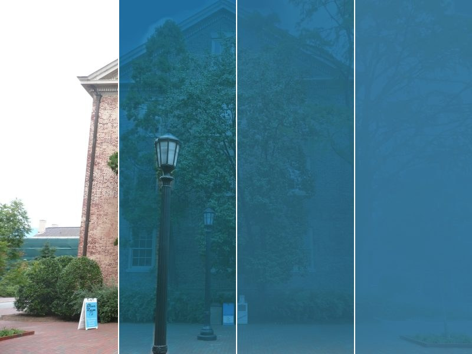
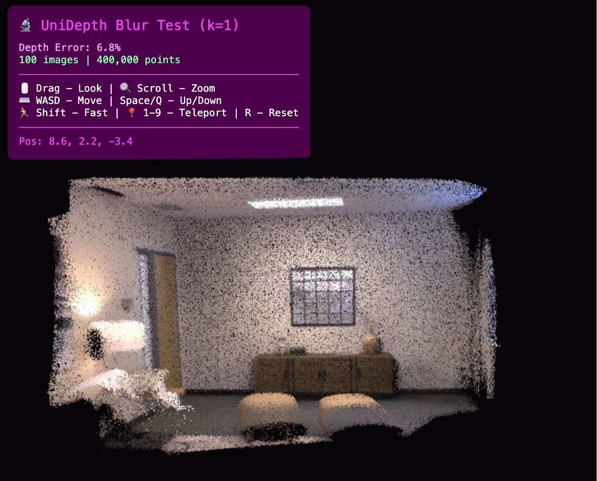
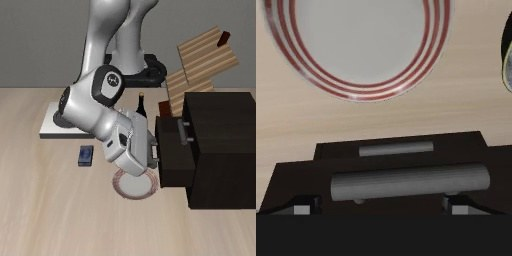
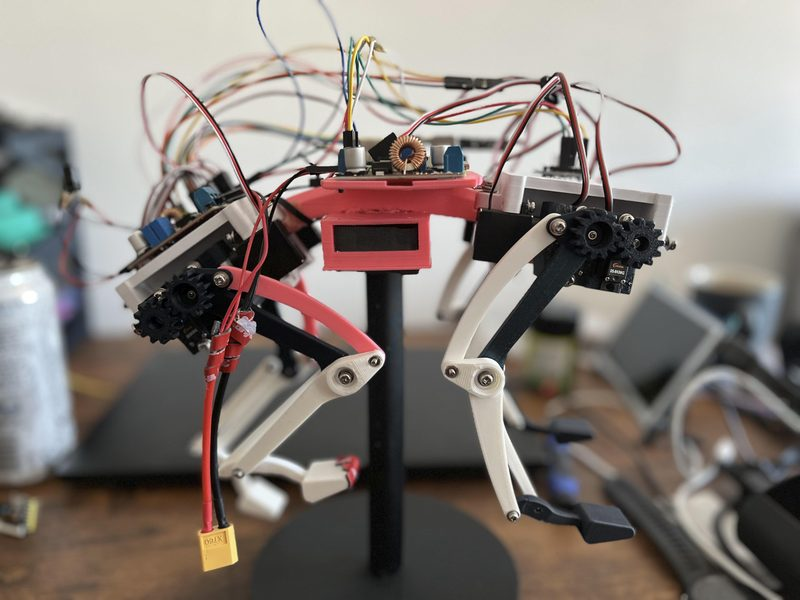

Projects

Underwater SfM Degradation Study
Personal research project · Jul – Sep 2026 · Solo
Physics-based underwater renderer (measured Jerlov optics, camera noise) feeding COLMAP, scored against a clear-air reference over 64 seeded runs. SfM keeps one map up to optical depth 2.4 (attenuation × range), splits at 2.7 and loses cameras from 3.2; color correction doesn't move the transition.

Multi-Sensor Fusion Localization
Nov 2025 – Jan 2026 · Solo
50 Hz ROS 2 EKF and UKF fusing wheel odometry, IMU and simulated GPS in Gazebo, cutting RMS position error 28.8% vs. dead reckoning, and riding through simulated 15 s GPS outages. A trimmed ICP LiDAR update is written but not yet run in simulation.

Robustness Analysis of Convex Bundle Adjustment
Course project, EECE 5550 Mobile Robotics · Nov – Dec 2025 · Team of 2
Stress-tested XM, a convex SDP bundle-adjustment pipeline, under severe image blur and ill-conditioned problems. COLMAP feature matching was the bottleneck (match retention fell to 5.7% under severe blur), while the SDP relaxation stayed tight (rank ≤ 3) in every tested case, though tight is not the same as correct, as the report notes. Report (PDF).

Bayesian Skill Gate for VLA Robot Policies In progress
Dell × NVIDIA GB10 Hackathon · Oct 2026 · Team of 4 · My part: the gate, the GR00T cell service and the control plane
An AI agent may trigger a robot skill only after trials show P(success ≥ 0.8) ≥ 0.95 under a Beta posterior. On a Dell GB10, the gate ran 20 GR00T N1.7 episodes in LIBERO simulation and opened only for the checkpoint that went 15/15. At the event only the agent's prompt enforced it; now moving it into a Cedar-enforced control plane.

12-DOF Quadruped Robot
Personal project · Oct 2025 – present · Based on Will Cogley's RoboFox design
Printed, wired and calibrated a 12-servo quadruped (Raspberry Pi, PCA9685, BNO055 IMU) that stood stably on calibrated servos (Feb 2026); IK and gait code developed on a MuJoCo model. Status, Sep 2026: legs being reprinted before IK tuning on the hardware.
Other Projects
-
Robot Fleet Dashboard · Jan – Feb 2026
ROS 2-to-web bridge: an rclpy + FastAPI node streams odometry (10 Hz) and battery state (1 Hz) from 3 simulated robots over WebSocket to a React / Three.js dashboard. -
Balloon Boy · Oct 2025 – Feb 2026, paused
Animatronic desktop assistant: a local + cloud LLM agent (Qwen 2.5 7B, GPT-4o-mini) with tool use and memory, and ESP32-S3 servo firmware (C++) for the eyes. Eye mechanism based on Will Cogley's open design.